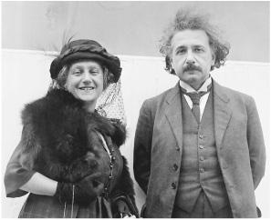

With Elsa, June 1922
“The Narrow Whirlpool of Personal Experience” “狭隘的个人经验”
As a young man, Einstein had predicted, in a letter to the mother of his first girlfriend, that the joys of science would be a refuge from painful personal emotions. And thus it was. His conquest of general relativity proved easier than finding the formulas for the forces swirling within his family.
爱因斯坦少年时，曾在给初恋女友母亲的信中预言，科学所带来的愉悦将使他从痛苦的个人感情中解脱出来。的确如此。事实证明，他攻克广义相对论要比解决家庭内部的矛盾更容易。
Those forces were complex. At the very moment he was finalizing his field equations—the last week of November 1915—his son Hans Albert was telling Michele Besso that he wanted to spend time alone with his father over Christmas, preferably on Zugerberg mountain or someplace similarly isolated. But simultaneously, the boy was writing his father a nasty letter saying he did not want him to come to Switzerland at all.1
这些矛盾十分复杂。在1915年11月的最后一周里，爱因斯坦正在给场方程定稿，儿子汉斯·阿尔伯特告诉贝索，他希望单独陪爸爸过圣诞节，最好是在楚格山或类似的僻静之处。但他同时也给爸爸写了一封令人不快的信，说根本不想让他来瑞士。
How to explain the contradiction? Hans Albert’s mind seemed at times to display a duality—he was, after all, only 11—and he had powerfully conflicted attitudes toward his father. That was no surprise. Einstein was intense and compelling and at times charismatic. He was also aloof and distracted and had distanced himself, physically and emotionally, from the boy, who was guarded by a doting mother who felt humiliated.
这种矛盾应该如何来看？汉斯·阿尔伯特有时似乎表现出两面性（毕竟他才11岁），他对父亲的态度十分矛盾。这并不奇怪。爱因斯坦富有热情，引人注目，魅力十足，但也超然物外，心不在焉，在身体和感情上时常疏远孩子。此时孩子正由那位自觉屈辱的妈妈照料。
The stubborn patience that Einstein displayed when dealing with scientific problems was equaled by his impatience when dealing with personal entanglements. So he informed the boy he was canceling the trip. “The unkind tone of your letter dismays me very much,” Einstein wrote just days after finishing his last lecture on general relativity. “I see that my visit would bring you little joy, therefore I think it’s wrong to sit in a train for two hours and 20 minutes.”
爱因斯坦在处理科学问题时非常执着，但在处理个人事务时却缺乏耐心，这两方面形成了鲜明对照。他告诉汉斯·阿尔伯特，他已经取消了行程。“你信中不友好的口吻让我热情顿消，”爱因斯坦在最后一次广义相对论讲演之后的几天写道，“我去看你似乎无法带给你快乐，所以我认为坐2小时20分钟的火车是错误的。”
There was also the question of a Christmas present. Hans Albert had become an avid little skier, and Mari gave him a set of equipment that cost 70 francs. “Mama bought them for me on condition that you also contribute,” he wrote. “I consider them a Christmas present.” This did not please Einstein. He replied that he would send him a gift in cash, “but I do think that a luxury gift costing 70 francs does not match our modest circumstances,” Einstein wrote, underlining the phrase.2
gave him a set of equipment that cost 70 francs. “Mama bought them for me on condition that you also contribute,” he wrote. “I consider them a Christmas present.” This did not please Einstein. He replied that he would send him a gift in cash, “but I do think that a luxury gift costing 70 francs does not match our modest circumstances,” Einstein wrote, underlining the phrase.2
圣诞节礼物也是个问题。汉斯·阿尔伯特已经成了一个小滑雪爱好者，米列娃准备送给他一套70法郎的滑雪用具。“只要你也出钱，妈妈就给我买，”他写道，“我把它当成一件圣诞礼物。”爱因斯坦听了颇为不快。他回信说，他会如其所愿把钱寄去。“不过我确实觉得，一件价值70法郎的奢侈礼物，对于我们这种收入微薄的家庭恐怕并不合适。”爱因斯坦还特地标注了下划线。
Besso put on what he called his “pastoral manner” to mediate. “You should not take serious offense at the boy,” he said. The source of the friction was Mari, Besso believed, but he asked Einstein to remember that she was composed “not only of meanness but of goodness.” He should try to understand, Besso urged, how difficult it was for Mari to deal with him. “The role as the wife of a genius is never easy.”3 In the case of Einstein, that was certainly true.
贝索开始以所谓“牧师的方式”进行调解。“你不该对儿子发那么大脾气。”他说。贝索相信问题的源头在于米列娃，但他要爱因斯坦记住，她“虽然自私，但也不乏善良”。贝索认为爱因斯坦应当试着去理解，米列娃同他打交道是多么困难。“做天才的妻子从来都不容易。” 就爱因斯坦而言，情况肯定是这样的。
The anxiety surrounding Einstein’s proposed visit was partly due to a misunderstanding. Einstein had assumed that the plan to have him and his son meet at the Bessos’ had been arranged because Mari and Hans Albert wanted it that way. Instead, the boy had no desire to be a bystander while his father and Besso discussed physics. Just the opposite: he wanted his father to himself.
因爱因斯坦的旅行计划而引发的矛盾部分源于一种误解。爱因斯坦原以为，安排他和汉斯·阿尔伯特在贝索家碰面是米列娃和儿子两人的主意，但实际上汉斯·阿尔伯特根本不希望父亲和贝索在讨论物理学时自己被晾在一边，而只想让父亲关注他自己。
Mari ended up writing to clear up the matter, which Einstein appreciated. “I was likewise a bit disappointed that I would not get Albert to myself but only under Besso’s protection,” he said.
最终，米列娃写信做了澄清，爱因斯坦心中的石头落了地。“我仍然感到有些失望，因为我不能亲自与阿尔伯特取得联系，而只能依靠贝索的帮助。”他说。
So Einstein reinstated his plan to visit Zurich, and he promised it would be one of many such trips to see his son. “[Hans] Albert* is now entering the age at which I can mean very much to him,” he said. “I want mainly to teach him to think, judge and appreciate things objectively.” A week later, in another letter to Mari, he reaffirmed that he was happy to make the trip, “for there is a faint chance that I’ll please Albert by coming.” He did, however, add rather pointedly, “See to it that he receives me fairly cheerfully. I am quite tired and overworked, and not capable of enduring new agitations and disappointments.”4
于是爱因斯坦又把苏黎世之行重新提上了日程，并保证以后会多次看望儿子。“（汉斯·）阿尔伯特现在已经逐渐长大，我在他心目中很快就会占据重要位置，”他说，“我主要想教他学会客观地思考、判断和评价事物。”一周之后，他又给米列娃写了封信，重申他很高兴去苏黎世，“因为我的到来还是有可能让阿尔伯特开心的”。不过，他又含沙射影地补充了一句：“要设法让他见到我时高兴一些。我现在精疲力竭，劳累过度，再也无力承受新的不安和失望了。”
It was not to be. Einstein’s exhaustion lingered, and the war made the border crossing from Germany difficult. Two days before Christmas of 1915, when he was supposed to be departing for Switzerland, Einstein instead wrote his son a letter. “I have been working so hard in the last few months that I urgently need a rest during the Christmas holidays,” he said. “Aside from this, coming across the border is very uncertain at present, since it has been almost constantly closed recently. That is why I must unfortunately deprive myself of visiting you now.”
但情况并不如意，他依然疲惫不堪。因为战争，离开德国已经很难。1915年圣诞节前的两天，按照原计划他本应前往瑞士，他给儿子写了封信。“在过去的几个月里，我一直在辛苦工作，我迫切需要在圣诞假期里好好休息一下，”他说，“此外，目前穿越国境很不保险，因为近来它几乎总是关闭着。所以我现在不得不遗憾地取消行程。”
Einstein spent Christmas at home. That day, he took out of his satchel some of the drawings that Hans Albert had sent him and wrote the boy a postcard saying how much they pleased him. He would come for Easter, he promised, and he expressed delight that his son enjoyed playing piano. “Maybe you can practice something to accompany a violin, and then we can play at Easter when we are together.”5
爱因斯坦在家中度过了圣诞节。那天，他给汉斯·阿尔伯特寄了一张明信片，说汉斯·阿尔伯特寄来的画让他非常高兴，并许诺复活节去看他。爱因斯坦高兴地发现，他的儿子竟然喜欢弹钢琴。“或许你可以练习一些曲子为小提琴伴奏，那样我们在复活节就可以一起演奏了。”
After he and Mari separated, Einstein had initially decided not to seek a divorce. One reason was that he had no desire to marry Elsa. Companionship without commitment suited him just fine. “The attempts to force me into marriage come from my cousin’s parents and is mainly attributable to vanity, though moral prejudice, which is still very much alive in the old generation, plays a part,” Einstein wrote Zangger the day after presenting his climactic November 1915 lecture. “If I let myself become trapped, my life would become complicated, and above all it would probably be a heavy blow for my boys. Therefore, I must allow myself not to be moved either by my inclination or by tears, but must remain as I am.” It was a resolution he repeated to Besso as well.6
刚与米列娃分居时，爱因斯坦并没有决定离婚。原因之一是，他毫无与爱尔莎结婚的愿望。没有承诺的情侣关系很合他的胃口。“结婚压力来自于我表姐的父母，究其原因主要是虚荣心在作怪，老一代人根深蒂固的道德偏见也起了一定作用，”爱因斯坦在1915年11月那场著名演讲之后的第二天写信给仓格尔说，“倘若我乖乖就范，我的生活就将变得十分复杂，而且首先对孩子可能是个沉重打击。因此，我既不能放任自己的感情，也不能被眼泪感化，而必须保持现状。”他对贝索也说了类似的话。
Besso and Zangger agreed that he should not seek a divorce. “It is important that Einstein knows that his truest friends,” Besso wrote Zangger, “would regard a divorce and subsequent remarriage as a great evil.”7
贝索和仓格尔对他不打算离婚表示赞同。“重要的是要让爱因斯坦明白，”贝索写道，“他最忠诚的朋友把离婚以及随后的再婚视为罪大恶极之事。”
But Elsa and her family kept pushing. So in February 1916, Einstein wrote Mari to propose—indeed, beg—that she agree to a divorce, “so that we can arrange the rest of our lives independently.” The separation agreement they had worked out with the help of Fritz Haber, he suggested, could serve as the basis for a divorce. “It will surely be possible to have the details settled to your satisfaction,” he promised. His letter also included instructions on how to keep their boys from suffering from calcium deficiency.8
但爱尔莎及其家人并不罢休。于是到了1916年2月，爱因斯坦致信米列娃，建议（事实上是请求）她同意离婚，“这样我们都可以独立地安排余下的生活”。他提出，哈伯帮助拟定的分居协议可以作为离婚的基础。“内容细节当然会包你满意。”他许诺说。他还在信中谈了如何解决孩子们缺钙的问题。
When Mari resisted, Einstein became more insistent. “For you it involves a mere formality,” he said. “For me, however, it is an imperative duty.” He informed Mari that Elsa had two daughters whose reputations and chances of marriage were being compromised by “the rumors” that were circulating about the illicit relationship their mother was having with Einstein. “This weighs on me and ought to be redressed by a formal marriage,” he told Mari. “Try to imagine yourself in my position for once.”
米列娃拒绝了，爱因斯坦则愈发坚定。“这对你来说只不过是一种手续，”他说，“但对我而言却是一种不容推卸的义务。”他告诉米列娃，他与爱尔莎的不合法关系已经招来不少“流言蜚语”，她两个女儿的名誉深受其害，婚姻也成了问题。“这使我心情很沉重，只有通过正式的婚姻才能补救，”他对米列娃说，“请设身处地为我想一想。”
As an enticement, he offered more money. “You would gain from this change,” he told Mari. “I wish to do more than I had obligated myself to before.” He would transfer 6,000 marks into a fund for the children and increase her payments to 5,600 marks annually. “By making myself such a frugal bed of straw, I am proving to you that my boys’ well-being is closest to my heart, above all else in the world.”
他答应补偿更多的钱。“这种变化对你是有益的，”他对米列娃说，“我甚至愿意为此承担更多的义务。”他会为孩子们转6000马克现款过去，并且把每年付给她的报酬提高到5600马克，同时每年至少再存3000马克。“我这种倾囊的做法是为了向你证明，儿子们的安康在我心里超出世上其他一切。”
In return, he wanted the right to have his sons visit him in Berlin. They would not come into contact with Elsa, he pledged. He even added a somewhat surprising promise: he would not be living with Elsa even if they got married. Instead, he would keep his own apartment. “For I shall never give up the state of living alone, which has manifested itself as an indescribable blessing.”
反过来，他希望有权让儿子们到柏林来看他。他保证不会让他们接触爱尔莎，甚至还加上了一条有些古怪的许诺：他即使与爱尔莎结婚，也会独自住在自己的公寓而不会住在一起。“因为我永远也无法放弃独自生活的状态，那种幸福简直无以言表。”
Mari did not consent to give him the right to have the boys visit him in Berlin. But she did tentatively agree—or at least so Einstein thought—to allow the start of divorce discussions.9
米列娃不愿让孩子们到柏林去看他，不过她的确同意（至少爱因斯坦是这么认为的）开始商谈离婚事宜了。
As he had promised Hans Albert, Einstein arrived in Switzerland in early April 1916 for a three-week Easter vacation, moving into a hotel near the Zurich train station. Initially, things went very well. The boys came to see him and greeted him joyously. From his hotel, he sent Mari a note of thanks:
1916年4月初，爱因斯坦履行他对儿子的诺言，到瑞士过复活节，为时三个星期。他住在苏黎世火车站附近的一家旅馆。开始时一切顺利，孩子们兴高采烈地来看他。他从旅馆给米列娃写了一张便条表示感谢：
My compliments on the good condition of our boys. They are in such excellent physical and mental shape that I could not have wished for more. And I know that this is for the most part due to the proper up-bringing you provide them. I am likewise thankful that you have not alienated me from the children. They came to meet me spontaneously and sweetly.
欣悉我们的孩子一切都好。他们身心非常健康，无须我多虑。我知道这主要应归功于你养育得法。同时也要由衷地感谢你没有让孩子们疏远我。他们大大方方、满心欢喜地与我相见。
Mari sent word that she wanted to see Einstein herself. Her goal was to be assured that he truly wanted a divorce and was not merely being pressured by Elsa. Both Besso and Zangger tried to arrange such a meeting, but Einstein declined. “There would be no point in a conversation between us and it could serve only to reopen old wounds,”s he wrote in a note to Mari.10
米列娃希望亲自见见爱因斯坦，以确定他是否真的想离婚，而不是迫于爱尔莎的压力。贝索和仓格尔都在张罗这样一次会面，但爱因斯坦拒绝了。“我们面谈似乎没有必要，那样只会重揭旧伤疤。”他对米列娃说。
Einstein took Hans Albert off alone, as the boy wished, for what was planned as a ten-day hiking excursion in a mountain resort overlooking Lake Lucerne. There they were caught in a late-season snowstorm that kept them confined to the inn, which initially pleased them both. “We are snowed in at Seelisberg but are enjoying ourselves immensely,” Einstein wrote Elsa. “The boy delights me, especially with his clever questions and his undemanding way. No discord exists between us.” Unfortunately, soon the weather, and perhaps also their enforced togetherness, became oppressive, and they returned to Zurich a few days early.11
爱因斯坦准备满足汉斯·阿尔伯特的要求，十天之内带他到山里的一处疗养胜地，从那里可以俯瞰整个卢采恩湖。然而一场暴风雪打乱了他们的计划，他们都被困在了旅馆里。开始时他们的心情很不错。“今天因为塞利斯贝格山（Selisberg）在下雪，我们被困在室内没有外出，但是我们相处得十分愉快，”爱因斯坦给爱尔莎写信说，“这小伙子让我感到很高兴，特别是因为他轻而易举地提出了一些机智的问题。我们之间毫无不和谐的感觉。”可惜天气很快变得更加恶劣，或许这种被迫的相处开始变得难以忍受，他们没过几天就返回了苏黎世。
Back in Zurich, the tensions revived. One morning, Hans Albert came to visit his father at the physics institute to watch an experiment. It was a pleasant enough activity, but as the boy was leaving for lunch, he urged his father to come by the house and at least pay a courtesy call on Mari.
回到苏黎世之后，他们的关系变得再度紧张起来。一天早上，汉斯·阿尔伯特到物理学研究所看爱因斯坦准备一个实验。本来事情进行得很愉快，但是到了午饭时分，汉斯·阿尔伯特敦促爸爸回家一趟，至少是礼节性地看望一下米列娃。
Einstein refused. Hans Albert, who was just about to turn 12, became angry and said he would not come back for the completion of the experiment that afternoon unless his father relented. Einstein would not. “That’s how it remained,” he reported to Elsa a week later, on the day he left Zurich. “And I have seen neither of the children since.”12
爱因斯坦没有答应。汉斯·阿尔伯特当时还不到12岁，他生气地说，如果爸爸不答应，他下午就不来了。爱因斯坦毫不妥协。“于是只好作罢，”他一周后离开苏黎世时给爱尔莎写信说，“从那时起我就再没见过儿子们了。”
Mari subsequently went into an emotional and physical melt-down. She had a series of minor heart incidents in July 1916, accompanied by extreme anxiety, and her doctors told her to remain in bed. The children moved in with the Bessos, and then to Lausanne, where they stayed with Mari’s friend Helene Savi, who was riding out the war there.
紧接着，米列娃的身心遭遇重创。1916年7月，她的心脏出了几次小问题，伴随而来的是极度的焦虑。医生让她静卧在床。孩子们先是搬到贝索家居住，然后又到洛桑，与正在那里躲避战火的米列娃的朋友萨维奇住在一起。
Besso and Zangger tried to get Einstein to come down from Berlin to be with his sons. But Einstein demurred. “If I go to Zurich, my wife will demand to see me,” he wrote Besso. “This I would have to refuse, partly on an inalterable resolve partly also to spare her the agitation. Besides, you know that the personal relations between the children and me deteriorated so much during my stay at Easter (after a very promising start) that I doubt very much whether my presence would be reassuring for them.”
贝索和仓格尔试图劝说爱因斯坦离开柏林与儿子们住在一起，但爱因斯坦没有同意。“如果我到苏黎世，我的妻子将会要求见我，”他给贝索写信说，“而我却不得不加以拒绝，一方面是因为已经做出的决定不可更改，另一方面也是为了防止她激动。况且你也知道，复活节期间我与孩子们的关系变得十分糟糕（刚开始时还是挺有希望的），因此我现在很怀疑，我的出现到底能否使孩子们感到宽慰。”
Einstein assumed that his wife’s illness was largely psychological and even, perhaps, partly faked. “Isn’t it possible that nerves are behind it all?” he asked Zangger. To Besso, he was more blunt: “I have the suspicion that the woman is leading both of you kind-hearted men down the garden path. She is not afraid to use all means when she wants to achieve something. You have no idea of the natural craftiness of such a woman.”13 Einstein’s mother agreed. “Mileva was never as sick as you seem to think,” she told Elsa.14
爱因斯坦认为妻子的病在很大程度上是心理疾病，甚至可能有伪装之嫌。“这一切难道没有可能因神经质而起吗？”他问仓格尔。在给贝索的信中，他说得更加强硬：“我怀疑你们两个好心的男人被这个女人牵着鼻子走了。她这样的人为达目的会不择手段。你们可不知道这个女人天性有多么狡猾。” 爱因斯坦的母亲深以为然。“米列娃的病从来不像看上去的那样严重。”她告诉爱尔莎。
Einstein asked Besso to keep him informed of the situation and made a stab at scientific humor by saying that his reports did not need to have logical “continuity” because “this is permissible in the age of quantum theory.” Besso was not sympathetic; he wrote Einstein a sharp letter saying Mari’s condition was not “a deception” but was instead caused by emotional stress. Besso’s wife, Anna, was even harsher, adding a postscript to the letter that addressed Einstein with the formal Sie.15
爱因斯坦要贝索将最新情况通报给他，还开玩笑说，其报告不必具有逻辑“连续性”，因为“这在量子理论时代是允许的”。贝索并未接茬说下去。他给爱因斯坦写了一封措辞严厉的信，说米列娃的情况并非“一种欺骗”，而是因情感压力所致。贝索的妻子安娜甚至更为强硬，她给这封信加上了一段附言，其中用正式的“您”来称呼爱因斯坦。
Einstein backed down from his charge that Mari was faking illness, but railed that her emotional distress was unwarranted. “She leads a worry-free life, has her two precious boys with her, lives in a fabulous neighborhood, does what she likes with her time, and innocently stands by as the guiltless party,” he wrote Besso.
爱因斯坦不再指责米列娃装病，但还是抱怨她不该有情感压力。“她过的是无忧无虑的日子，身边有两个宝贝儿子，住的地段极好，可以自由地支配时间，头上还顶着被人抛弃的清白无辜者的光环。”他在给贝索的信中说。
Einstein was especially stung by the cold postscript, which he mistakenly thought came from Michele rather than Anna Besso. So he added his own postscript: “We have understood each other well for 20 years,” he said. “And now I see you developing a bitterness toward me for the sake of a woman who has nothing to do with you. Resist it!” Later that day he realized he had mistaken Anna’s harsh postscript for something her husband had written, and he quickly sent along another note apologizing to him.16
那段冷冷的附言深深地刺痛了爱因斯坦。他误以为是贝索写的，于是他也加上了一段话：“20年来我们相交甚笃，”他说，“而现在我却发现，你心里对我的怨恨正日见增长——为了一个与你毫无关系的妇人。请不要这样吧！”那天晚些时候，他意识到自己误把安娜的附言当成了她丈夫写的，于是立刻又写了一封信向贝索道歉。
On Zangger’s advice, Mari checked into a sanatorium. Einstein still resisted going to Zurich, even though his boys were at home alone with a maid, but he told Zangger he would change his mind “if you think it’s appropriate.” Zangger didn’t. “The tension on both sides is too great,” Zangger explained to Besso, who agreed.17
在仓格尔的建议下，米列娃到一家疗养院接受治疗。爱因斯坦仍然不愿意去苏黎世，虽然他的儿子们只有一位女仆陪着。但他告诉仓格尔，“如果你觉得合适”，他会改变想法。仓格尔觉得目前还不是时候。“双方的关系太紧张了。”仓格尔向贝索解释说。贝索也同意了。
Despite his detached attitude, Einstein loved his sons and would always take care of them. Please let them know, he instructed Zangger, that he would take them under his wing if their mother died. “I would raise the two boys myself,” he said. “They would be taught at home, as far as possible by me personally.” In various letters over the next few months, Einstein described his different ideas and fantasies for home-schooling his sons, what he would teach, and even the type of walks they would take. He wrote Hans Albert to assure him that he was “constantly thinking of you both.”18
尽管坚持离婚，但爱因斯坦依然爱他的儿子，希望一直照顾他们。他对仓格尔说，请让他们知道，如果他们的妈妈去世了，他会照顾好他们。“我会亲自将两个孩子抚养长大，”他说，“只要可能，我会在家里手把手地教他们。”在接下来的几个月里，爱因斯坦多次谈及如何教育儿子，不仅包括所教授的内容，甚至连如何一起散步都要考虑。他给汉斯·阿尔伯特写信说“我一直惦念着你们俩”。
But Hans Albert was so angry, or hurt, that he had stopped answering his father’s letters. “I believe that his attitude toward me has fallen below the freezing point,” Einstein lamented to Besso. “Under the given circumstances, I would have reacted in the same way.” After three letters to his son went unanswered in three months, Einstein plaintively wrote him: “Don’t you remember your father anymore? Are we never going to see each other again?”19
也许是由于过于气愤，或是伤心过度，汉斯·阿尔伯特并没有回复爸爸的这些信。“我认为，他对我的敌视已经到了极点，”爱因斯坦悲伤地对贝索说，“在目前这种情况下，我也只能以同样的方式做出回应。”在三个月内给儿子写了三封信均未收到回音之后，爱因斯坦径直写信问他：“你还记得我这个爸爸吗？我们是不是永不再见了？”
Finally, the boy replied by sending a picture of a boat he was constructing out of wood carvings. He also described his mother’s return from the sanatorium. “When Mama came home, we had a celebration. I had practiced a sonata by Mozart, and Tete had learned a song.”20
最终，汉斯·阿尔伯特寄来了一张他最近用木头建造的小艇的图片。他还描述了妈妈从疗养院回来的情形。“妈妈回家的时候，我们庆祝了一番。我演奏了莫扎特的一首奏鸣曲，泰特学唱了一首歌。”
Einstein did make one concession to the sad situation: he decided to give up asking Mari for a divorce, at least for the time being. That seemed to aid her recovery. “I’ll take care that she doesn’t get any more disturbance from me,” he told Besso. “I have abandoned proceeding with the divorce. Now on to scientific matters!”21
面对这种惨状，爱因斯坦的确做出了让步，他决定不再要求米列娃离婚，至少暂时不要求。这似乎有助于她的康复。“我将尽量注意，再也不让她从我这里听到任何令人不安的消息，”他对贝索说，“我也最终放弃了离婚的打算。现在还是谈谈科学吧！”
Indeed, whenever personal issues began to weigh on him, he took refuge in his work. It shielded him, allowed him to escape. As he told Helene Savi, likely with the intent that it get back to her friend Mari, he planned to retreat into scientific reflection. “I resemble a farsighted man who is charmed by the vast horizon and whom the foreground bothers only when an opaque object prevents him from taking in the long view.”22
的确，每当受到个人问题困扰，他都会在工作中寻求庇护。工作保护了他，使他有地方逃避。正如他对萨维奇所说（可能是希望这番话能够传到她的朋友米列娃耳中）他打算退回到科学思考中。“我就像是一个视野广阔的远视者，只有当障碍物妨碍他远观时，近景才会困扰他。”
So even as the personal battle was raging, his science provided solace. In 1916, he began writing again about the quantum. He also wrote a formal exposition of his general theory of relativity, which was far more comprehensive, and slightly more comprehensible, than what had poured forth in the weekly lectures during his race with Hilbert the previous November.23
因此，在个人事务陷入困境时，科学成了爱因斯坦的慰藉。1916年，他再次着手研究量子，同时还就广义相对论写了一篇正式文章进行阐述，它比1915年11月与希尔伯特竞争期间的讲演内容更全面，也更好理解。
In addition, he produced an even more understandable version: a book for the lay reader, Relativity: The Special and the General Theory, that remains popular to this day. To make sure that the average person would fathom it, he read every page out loud to Elsa’s daughter Margot, pausing frequently to ask whether she indeed got it. “Yes, Albert,” she invariably replied, even though (as she confided to others) she found the whole thing totally baffling.24
此外，他还为普通读者写了一本《狭义与广义相对论浅说》（Relativity：The Special and the General Theory），这本书直到今天都很受欢迎。为了确保一般人都能理解，他向爱尔莎的女儿玛戈特逐字逐句大声朗读了全书，还不时停下来问她是否听懂了。“是的，阿尔伯特。”她总是这样回答，即使（正如她对别人吐露的）她觉得所有这些内容完全莫名其妙。
This ability of science to be used as a refuge from painful personal emotions was a theme of a talk he gave at a celebration of Max Planck’s sixtieth birthday. Putatively about Planck, it seemed to convey more about Einstein himself. “One of the strongest motives that leads men to art and science is escape from everyday life with its painful crudity and hopeless dreariness,” Einstein said. “Such men make this cosmos and its construction the pivot of their emotional life, in order to find the peace and security which they cannot find in the narrow whirlpool of personal experience.”25
用科学来摆脱痛苦的个人感情，是他在庆祝普朗克60岁生曰会上讲演的一个主题。虽然这段话针对的是普朗克，但它所传达的精神似乎更多地属于爱因斯坦本人。“把人们引向艺术和科学的最强烈的动机之一，是要逃避日常生活中令人厌恶的粗俗和使人绝望的沉闷，”爱因斯坦说，“这些人把和谐的世界及其构造当作他们感情生活的支点，以便获得他在狭隘的个人经验里找不到的宁静和安定。”
The Treaty 协议
In early 1917, it was Einstein’s turn to fall ill. He came down with stomach pains that he initially thought were caused by cancer. Now that his mission was complete, death did not frighten him. He told the astronomer Freundlich that he was not worried about dying because now he had completed his theory of relativity.
1917年年初，爱因斯坦也病了。他胃痛十分剧烈，甚至开始怀疑是癌症。既然此时使命已经完成，他并不惧怕死亡。他对天文学家弗伦德里希说，他不担心死亡，因为他的相对论已经完成。
Freundlich, on the other hand, did worry about his friend, who was still only 38. He sent Einstein to a doctor, who diagnosed the problem as a chronic stomach malady, one that was exacerbated by wartime food shortages. He put him on a four-week diet of rice, macaroni, and zwieback bread.
而弗伦德里希却很担心他这位朋友，毕竟爱因斯坦只有38岁。他给爱因斯坦找了一位医生，经诊断，他患的是一种慢性胃炎，战争期间的食品短缺令他的病情更是雪上加霜。他建议爱因斯坦吃四个星期的米饭、通心粉和烤干面包。
These stomach ailments would lay him low for the next four years, then linger for the rest of his life. He was living alone and having trouble getting proper meals. From Zurich, Zangger sent packages to help satisfy the prescribed diet, but within two months Einstein had lost close to fifty pounds. Finally, by the summer of 1917, Elsa was able to rent a second apartment in her building, and she moved him in there to be her neighbor, charge, and companion.26
在接下来的四年里，他将因此而卧病在床，而且这种胃病将使他终身遭受折磨。由于是一个人生活，合理饮食便成了问题。仓格尔从苏黎世寄来了不少包裹，都是稀缺的食物。然而两个月内，爱因斯坦的体重降了50多磅。最后，到了1917年夏天，爱尔莎在她那幢大楼里租到了第二间公寓，她帮爱因斯坦搬到那里，负责照料和陪伴他。
Elsa took great joy in foraging for the food he found comforting. She was resourceful and wealthy enough to commandeer the eggs and butter and bread he liked, even though the war made such staples hard to come by. Every day she cooked for him, doted on him, even found him cigars. Her parents helped as well by having them both over for comforting meals.27
爱尔莎开始积极搜寻爱因斯坦爱吃的食物。她不仅足智多谋，而且十分富有。虽然正值战争期间，但她依然可以弄到他喜欢吃的鸡蛋、黄油和面包。每天她都给他做饭，溺爱他，甚至还为他找到了雪茄。她的父母也时常邀请他们到家里美餐一顿。
The health of his younger son, Eduard, also was precarious. Once again he had fevers, and in early 1917 his lungs became inflamed. After receiving a pessimistic medical prognosis, Einstein lamented to Besso, “My little boy’s condition depresses me greatly. It is impossible that he will become a fully developed person. Who knows if it wouldn’t be better for him if he could depart before coming to know life properly.”
小儿子爱德华的病情也很不稳定。他时常发烧，1917年年初还感染了肺炎，诊断结果很不理想。爱因斯坦悲伤地对贝索说：“我小儿子的状况令我十分沮丧。他将来已经没有可能全面发展。如果他还没来得及真正懂得生活就告别人世，谁知道这是不是对他更好呢？”
To Zangger, he ruminated about the “Spartan’s method”—leaving sickly children out on a mountain to die—but then said he could not accept that approach. Instead, he promised to pay whatever it took to get Eduard care, and he told Zangger to send him to whatever treatment facility he thought best. “Even if you silently say to yourself that every effort is futile, send him anyway, so that my wife and my Albert think that something is being done.”28
在给仓格尔的信中，他提到了“斯巴达人的做法”——把生病的孩子扔到山里任其死去。但他又接着说，这种做法让人无法接受。他承诺自己会不惜一切代价照顾爱德华，并让仓格尔送他到最好的医疗机构。“即使你默默地对自己说，一切努力都是徒劳的，也要送他过去，这样我的妻子和小阿尔伯特才会认为，我们的确在竭力对抗这种不幸。”
That summer, Einstein traveled back to Switzerland to take Eduard to a sanatorium in the Swiss village of Arosa. His ability to use science to rise above personal travails was illustrated in a letter he sent to his physicist friend Paul Ehrenfest: “The little one is very sickly and must go to Arosa for a year. My wife is also ailing. Worries and more worries. Nevertheless, I have found a nice generalization of the Sommerfeld-Epstein quantum law.”29
那年夏天，爱因斯坦又回到了瑞士，他亲自带爱德华到阿罗莎（Arosa）村的一家疗养院。他给物理学家朋友埃伦菲斯特写了一封信，其中用科学来超越个人感情的能力清晰可见：“小儿子病得很重，必须到阿罗莎一年。我的妻子也病了。真是烦恼丛生，苦不堪言。不过，我发现了一种推广索默菲-爱普斯坦量子定律的很不错的方法。”
Hans Albert joined his father on the journey to take Eduard to Arosa, and he then visited when Einstein was staying with his sister, Maja, and her husband, Paul Winteler, in Lucerne. There he found his father bedridden with stomach pains, but his uncle Paul took him hiking. Gradually, with a few rough patches, Einstein’s relationship with his older son was being restored. “The letter from my Albert was the greatest joy I’ve had for the past year,” he told Zangger. “I sense with bliss the intimate tie between us.” Financial worries were also easing. “I received a prize of 1,500 crowns from the Viennese Academy, which we can use for Tete’s cure.”30
汉斯·阿尔伯特和爸爸送爱德华去了阿罗莎，然后他们到了卢采恩，与爱因斯坦的妹妹玛雅及妹夫保罗·温特勒待在一起。爱因斯坦因胃痛而卧床不起，只能保罗叔叔带汉斯·阿尔伯特出去玩。经过一些艰难的磨合，爱因斯坦与汉斯·阿尔伯特的关系正在逐渐转暖。“我的阿尔伯特写来的信是过去一年中我最大的快乐，”他对仓格尔说，“这种亲密联系让我很幸福。””经济上的忧虑也在消退。“维也纳科学院给了我1500克朗的奖励，我们可以用这笔钱给泰特治病。”
Now that he had moved into the same building as Elsa and she was nursing him back to health, it was inevitable that the issue of a divorce from Mari would arise again. In early 1918, it did. “My desire to put my private affairs in some state of order prompts me to suggest a divorce to you for a second time,” he wrote. “I am resolved to do everything to make this step possible.” This time his financial offer was even more generous. He would pay her 9,000 marks rather than what had now become a 6,000 annual stipend, with the provision that 2,000 would go into a fund for their children.*
既然爱因斯坦现在已经搬到了爱尔莎那幢楼里，而且爱尔莎又在照料他，帮助他康复，因此与米列娃离婚的事情又不免再次被提起。1918年年初，他终于采取了新一波的行动。“我希望在一定程度上理顺我的私人关系，这促使我第二次向你提出离婚的请求，”他写道，“为此，我决心竭尽所能。”这次他开出的价码更加优厚。他每年将付给她9000马克，而不是现在的6000马克，条件是其中有2000马克要用在孩子们身上。
Then he added an amazing new inducement. He was convinced, with good reason, that he would someday win the Nobel Prize. Even though the scientific community had not yet fully come to grips with special relativity, much less his new and unproven theory of general relativity, eventually it would. Or his groundbreaking insights into light quanta and the photoelectric effect would be recognized. And so he made a striking offer to Mari: “The Nobel Prize—in the event of the divorce and the event that it is bestowed upon me—would be ceded to you in full.”31
接着，他补充了一条令人吃惊的新的诱惑。他胸有成竹地确信自己有一天会得到诺贝尔奖。即使科学界还没有完全理解狭义相对论，更不要说他未经证实的新的广义相对论，但最终会的。或者他关于光量子和光电效应的深刻洞见总有一天会被认可。于是他许给了米列娃一项惊人的东西：“一旦离婚，只要诺贝尔奖发给我，我就将全部转给你。”
It was a financially enticing wager. The Nobel Prize was then, as it is now, very lucrative, indeed huge. In 1918, it was worth about 135,000 Swedish kronor, or 225,000 German marks—more than 37 times what Mari was getting annually. In addition, the German mark was starting to collapse, but the Nobel would be paid in stable Swedish currency. Most poignantly, there would be some symbolic justice: she had helped Einstein with the math and proofreading and domestic support for his 1905 papers, and now she could reap some of the reward.
这项赌注的价码是很有诱惑力的。无论是当时还是现在，诺贝尔奖都是一大笔钱。1918年，它大概相当于135000瑞典克朗或225000德国马克，是米列娃年收入的37倍多。何况德国马克正要开始贬值，而诺贝尔奖金却会以稳定的瑞典货币支付。此外，这里可能还存在着某种颇具象征意味的权衡考虑：她曾经为爱因斯坦1905年的论文提供过数学、校对等方面的帮助，在家务上也提供过支持，现在她终于可以分一杯羹了。
At first she was furious. “Exactly two years ago, such letters pushed me over the brink into misery, which I still can’t get over,” she replied. “Why do you torment me so endlessly? I really don’t deserve this from you.”32
起初她极为恼火。“两年前，这种信把我推入了痛苦的深渊，直到现在都没有恢复过来，”她回信说，“你为什么要无休止地折磨我？你真的不应当这样对我。
But within a few days, she began to assess the situation more clinically. Her life had reached a low point. She suffered pains, anxieties, and depression. Her younger son was in a sanatorium. The sister who had come to help her succumbed to depression and had been committed to an asylum. And her brother, who was serving as a medic in the Austrian army, had been captured by the Russians. Perhaps an end to the battles with her husband and the chance of financial security might, in fact, be best for her. So she discussed the option with her neighbor Emil Zürcher, who was a lawyer and a friend.
但几天之后，她开始更加冷静地估计形势。她的生活已经到了谷底，而且饱受病痛、焦虑、抑郁的折磨。小儿子住在疗养院。妹妹赶来帮她，却因精神消沉而被送到了精神病院。她的哥哥是奥地利军队的军医，但被俄军俘虏了。与丈夫结束战斗，获得经济保障，对她来说也许是最好的选择。于是她与邻居的律师朋友埃米尔·齐歇尔商量了一下该如何选择。
A few days later she decided to take the deal. “Have your lawyer write Dr. Zürcher about how he envisions it, how the contract should be,” she replied. “I must leave upsetting things to objective persons. I do not want to stand in the way of your happiness, if you are so resolved.”33
几天以后，她决定接受这个协议。“让你的律师写信给齐歇尔博士，谈谈一切应当如何安排，以及协议该如何写，”她回复说，“一切使我烦心的事情，我都必须留给客观公正的人去处理。如果你决心已下，我并不想阻拦你的幸福。”
The negotiations proceeded through letters and third parties through April. “I am curious what will last longer, the world war or our divorce proceedings,” he complained lightly at one point. But as things were progressing the way he wanted, he merrily added, “In comparison, this little matter of ours is still much the more pleasant. Amiable greetings to you and kisses to the boys.”
到了4月，讨价还价通过书信和第三方进行。“我很想知道，什么会持续更长时间，是世界大战，还是我们的离婚。”他曾经这样旁敲侧击地埋怨道。但随着事态不断朝着理想的方向发展，他高兴地说：“相比而言，我们的情况还要好些。向你致以友好的问候，并吻小家伙们。”
The main issue was money. Mari complained to a friend that Einstein was being stingy (in fact he wasn’t) because of Elsa. “Elsa’s very greedy,” Mari charged. “Her two sisters are very rich, and she’s always envious of them.” Letters went back and forth over exactly how the prospective Nobel Prize money would be paid, what right the children would have to it, what would happen to it if she remarried, and even what compensation he would offer in the unlikely event that the prize was never awarded to him.34
在这中间，钱是主要议题。米列娃向朋友抱怨说，爱因斯坦正因为爱尔莎而变得吝啬（事实上没有）。“爱尔莎非常贪婪，”米列娃指责说，“她的两个姊妹很富有，她总是嫉妒她们。”他们争论的问题包括：未来的诺贝尔奖金应如何支付，孩子们享有什么权利，如果她再婚了又当如何，倘若他万一没有得诺贝尔奖，他将如何进行补偿等。
Another contentious issue was whether his sons could visit him in Berlin. On barring that, Mari held firm.35 Finally, at the end of April, he surrendered this final point. “I’m giving in about the children because I now believe you want to handle matters in a conciliatory manner,” he said. “Maybe you will later take the view that the boys can come here without reservation. For the time being, I will see them in Switzerland.”36
另一个争议是，他的儿子是否可以到柏林来看他。米列娃坚决反对这种做法。 最终，他在4月底放弃了这一要求。“关于孩子们，我还是让步吧，因为我现在确信，你也愿意以和解的方式来处理事情，”他说，“以后你也许会毫不犹豫地把孩子们交到我这儿来。暂时我将在瑞士见他们。”
Given Mari’s poor health, Einstein had tried to work out another option for the two boys: having them live in nearby Lucerne with his sister, Maja, and her husband, Paul Winteler. The Wintelers were willing to take custody of their nephews, and they took the train to Bern one day to see if this could be arranged. But when they arrived, Zangger was away, and they wanted his help before discussing things with Mari. So Paul went over to see his feisty sister Anna, who was married to Michele Besso, to see if they could have a room for the night.
考虑到米列娃健康状况很糟糕，爱因斯坦为两个儿子想了另一种方案：让他们住在附近的卢采恩，由他的妹妹玛雅和妹夫保罗·温特勒照顾。温特勒一家很愿意照料他们的侄子。有一天，他们乘火车去伯尔尼找仓格尔讨论这种方案。因为在与米列娃商量之前，他们需要仓格尔的帮助。但他们到达之后，发现仓格尔恰好不在。于是保罗去找他火爆脾气的妹妹安娜（她嫁给了贝索），看他们那里是否可以借住一宿。
He had planned not to tell Anna the purpose of their mission, as she had a protective attitude toward Mari and a hair-trigger sense of righteous indignation. “But she guessed the purpose of our coming,” Maja reported to Einstein, “and when Paul confirmed her suspicions a torrent of accusations, scoldings, and threats poured forth.”37
他本来不打算告诉安娜此行的目的，因为她比较同情米列娃，还有一种义愤填膺的正义感。“但她猜到了我们来访的目的，”玛雅告诉爱因斯坦，“当保罗肯定了她的怀疑之后，斥责和威胁一股脑地倾泻出来。”
So Einstein wrote a letter to Anna to try to enlist her support. Mari, he argued, was “incapable of running a household” given her condition. It would be best if Hans Albert went to live with Maja and Paul, he argued. Eduard could either do the same or stay in a mountain-air clinic until his health improved. Einstein would pay for it all, including Mari’s costs in a sanatorium in Lucerne, where she could see her sons every day.
于是爱因斯坦给安娜写了一封信，希望她能给予支持。他说，米列娃目前“无法理家”。如果汉斯·阿尔伯特同玛雅和保罗住在一起，那真是再好不过了。爱德华也可以同去，还可以住在山里的一家医疗机构休养，直到健康有所好转。爱因斯坦将负担全部费用，包括米列娃在卢采恩疗养院的开销，在那里她每天都可以见到孩子们。
Unfortunately, Einstein made the mistake of ending the letter by pleading with Anna to help resolve the situation so that he could marry Elsa and end the shame that their relationship was causing her daughters. “Think of the two young girls, whose prospects of getting married are being hampered,” he said. “Do put in a good word for me sometime to Miza [Mari] and make it clear to her how unkind it is to complicate the lives of others pointlessly.”38
可惜爱因斯坦在信的结尾犯了一个错误，他恳请安娜帮助解决这个问题，这样他就可以同爱尔莎结婚，并结束他们的关系对她的两个女儿带来的耻辱。“想想这两个年轻的姑娘吧，她们结婚的前景已经变得不妙，”他说，“请在Miza（米列娃）那儿为我说句好话吧，向她解释清楚，无缘无故地给别人的生活造成困难是多么不好。”
Anna shot back that Elsa was the one being selfish. “If Elsa had not wanted to make herself so vulnerable, she should not have run after you so conspicuously.”39
安娜反唇相讥，说爱尔莎是一个自私透顶的人。“倘若爱尔莎不想让自己变得如此难堪，她就不应当这样明目张胆地缠着你不放。”
In truth, Anna was quite difficult, and she soon had a falling out with Mari as well. “She tried to meddle in my affairs in a way that reveals potential human malice,” Mari complained to Einstein. At the very least, this helped improve relations between the Einsteins. “I see from your letter that you also have had problems with Anna Besso,” he wrote Mari just after they had agreed to the divorce terms. “She has written me such impertinent letters that I’ve put an end to further correspondence.”40
事实上，安娜非常难以相处，她不久也同米列娃发生了争吵。“她试图干涉我的事情，人性中潜藏的恶由此暴露出来。”米列娃向爱因斯坦抱怨说。这在一定程度上有利于爱因斯坦一家关系的改善。“我从你的信中看出，你同安娜·贝索也有过麻烦，”在刚刚同意离婚条款之后，他就写信给米列娃，“她给我写了那些粗鲁无礼的信来，我只好终止了进一步通信。”
It would be a few more months before the divorce decree could become final, but now that the negotiations were complete, everyone seemed relieved that there would be closure. Mari’s health improved enough so that the children would remain with her,41 and the letters back and forth from Berlin and Zurich became friendlier. “A satisfactory relationship has formed between me and my wife through the correspondence about the divorce!” he told Zangger. “A funny opportunity indeed for reconciliation.”42
此时离婚协议还要几个月时间才能生效，但谈判已经结束，每一个人似乎都如释重负，事情总算要有个了结了。米列娃康复得不错，孩子们终于可以和她待在一起了 ，柏林与苏黎世之间的通信也变得愈发友好。“通过商谈离婚的事情，我与妻子之间又形成了令人满意的关系！”他告诉仓格尔，“这的确是和解的好机会。”
This détente meant that Einstein had an option for his summer vacation of 1918: visit his children in Zurich, or have a less stressful holiday with Elsa. He chose the latter, partly because his doctor recommended against the altitude, and for seven weeks he and Elsa stayed in the Baltic Sea resort of Aarenshoop. He brought along some light beach reading, Immanuel Kant’s Prolegomena, spent “countless hours pondering the quantum problem,” and gloried in relaxing and recovering from his stomach ailments. “No telephones, no responsibilities, absolute tranquility,” he wrote to a friend. “I am lying on the shore like a crocodile, allowing myself to be roasted by the sun, never see a newspaper, and do not give a hoot about the so-called world.”43
这种缓和意味着，爱因斯坦可以就1918年的暑假安排做出选择。他既可以到苏黎世看望孩子们，也可以轻松自在地同爱尔莎去度假。他选择了后者。由于医生不主张到海拔高的地方，他与爱尔莎在波罗的海胜地阿伦斯霍普（Aarenshoop）待了7个星期。他带去了一些轻松的海滩读物以及康德的《未来形而上学导论》，花了“无数时间思考量子问题”，为身心放松和胃病康复而欣喜。“没有电话，没有义务，静谧非常，”他高兴地对一位朋友说，“我像鳄鱼一样躺在海滨，任凭太阳烘烤，从不看报，对所谓的人世不屑一顾。”
From this unlikely vacation, he sought to mollify Hans Albert, who had written to say he missed his father.“Write me please why you aren’t coming, at least,” he asked.44 Einstein’s explanation was sad and very defensive:
在这个前途未卜的假期里，爱因斯坦试图缓和他与汉斯·阿尔伯特的关系，后者曾经写信说想念他。“至少请写信告诉我，为什么你不准备来。”汉斯·阿尔伯特问道。 爱因斯坦极力为自己辩护，给出的解释令人悲伤：
You can easily imagine why I could not come. This winter I was so sick that I had to lie in bed for over two months. Every meal must be cooked separately for me. I may not make any abrupt movements. So I’d have been allowed neither to go on a walk with you nor to eat at the hotel . . . Added to this is that I had quarreled with Anna Besso, and that I did not want to become a burden to Mr. Zangger again, and finally, that I doubted whether my coming mattered much to you.45
你很容易想象我为什么不能来。今年冬天我病得很厉害，只得卧床两个多月。我的每一餐都必须单独做，也不能做任何剧烈运动。所以我可能无法同你一起散步和在旅馆吃饭……此外，我与安娜·贝索发生过争吵，我不想再给仓格尔先生添麻烦。最后，我怀疑我的到来对你是否真的那么重要。
His son was understanding. He wrote him letters filled with news and ideas, including a description and sketch of an idea he had for a pendulum inside a monorail that would swing and break the electric circuit whenever the train tilted too much.
儿子原谅了他。汉斯·阿尔伯特给他写了几封信，谈了各种消息和看法，还描述了他设计的一种安装在单轨火车内的摆。如果火车倾斜得太厉害，这个摆就会摆动，切断电路。
Einstein had rebuked Hans Albert, unfairly, for not finding some way to visit him in Germany during the vacation. That would have required Mari to waive the provision in their separation agreement that barred such trips, and it would also have been sadly impractical. “My coming to Germany would be almost more impossible than your coming here,” Hans Albert wrote, “because in the end I am the only one in the family who can shop for anything.”46
爱因斯坦不公平地批评了汉斯·阿尔伯特没有设法在假期到德国来看他，因为在与米列娃的分居协议中，这种旅行是不被允许的，而且也是相当不切实际的。“我到德国几乎比你来这里更不可能，”汉斯·阿尔伯特写道，“因为到头来我是家里唯一能去商店买点东西的人。”
So Einstein, yearning to be nearer to his boys, found himself briefly tempted to move back to Zurich. During his Baltic vacation that summer of 1918, he considered a combined offer from the University of Zurich and his old Zurich Polytechnic. “You can design your position here exactly as you wish,” the physicist Edgar Meyer wrote. As Einstein jokingly noted to Besso, “How happy I would have been 18 years ago with a measly assistantship.”47
于是，渴望接近儿子们的爱因斯坦暂时打算搬回苏黎世。1918年在波罗的海度假期间，他同时考虑了苏黎世大学和母校苏黎世联邦工学院的邀请。“您可以随意安排您在这里的职位。”物理学家埃德加·迈尔写信说。爱因斯坦对贝索开玩笑说：“18年前，我要是个微不足道的助教该多么幸福。”
Einstein admitted that he was tormented by the decision. Zurich was his “true home,” and Switzerland was the only country for which he felt any affinity. Plus, he would be near his sons.
爱因斯坦承认，这项决定使他非常痛苦。苏黎世是他“真正的家”，瑞士是唯一让他感到有亲和力的国家，何况还能亲近自己的儿子。
But there was one rub. If he moved close to his sons he would be moving close to their mother. Even for Einstein, who was good at shielding himself from personal emotions, it would be hard to set up household with Elsa in the same town as his first wife.“My major personal difficulties would persist if I pitched my tent in Zurich again,” he told Besso, “although it does seem tempting to be close to my children.”48
但有一个问题。倘若他搬到儿子附近，就会靠近他的妻子。即使是擅于逃避个人感情影响的爱因斯坦，也很难在前妻生活的城市和爱尔莎组建家庭。“虽然我很想亲近孩子们，”他告诉贝索，“但如果我再次在苏黎世安家，那么我个人的主要麻烦就会继续。”
Elsa was also adamantly opposed to the prospect, even appalled. She begged Einstein to promise it would not happen. Einstein could be quite solicitous about Elsa’s desires, and so he backed away from a full-time move to Zurich.
爱尔莎也坚决反对这项决定，甚至对它充满了恐惧。她央求爱因斯坦不要这样做。或许是因为这个，他不再考虑搬到苏黎世。
Instead, he did something he usually avoided: he compromised. He retained his position in Berlin but agreed to be a guest lecturer in Zurich, making month-long visits there twice a year. That, he thought, could give him the best of both worlds.
就这样，他罕见地妥协了。他保留了柏林的职位，不过答应在苏黎世担任客座教师，每年去那里访问两个月。他认为此举两全其美。
In what seemed like an excess of Swiss caution, the Zurich authorities approved the lecture contract, which paid Einstein his expenses but no fee, “by way of experiment.” They were in fact wise; Einstein’s lectures were initially very popular, but eventually attendance dwindled and they would be canceled after two years.
瑞士人似乎过于谨慎了，苏黎世当局“实验性地批准了这项讲课合同。它可以报销爱因斯坦的花费，但不支付现金。他们这种做法实际上很高明。爱因斯坦的课一开始很受欢迎，但听众渐渐就少了，以致两年后不得不取消。
The Social Democrat 社会民主人士
Which would finish first, Einstein had wondered half-jokingly to Mari, the world war or their divorce proceedings? As it turned out, both came to a messy resolution at the end of 1918. As the German Reich was crumbling that November, a revolt by sailors in Kiel mushroomed into a general strike and popular uprising. “Class canceled because of Revolution,” Einstein noted in his lecture diary on November 9, the day that protestors occupied the Reichstag and the kaiser abdicated. Four days later, a worker-student revolutionary council took over the University of Berlin and jailed its deans and rector.
爱因斯坦曾经半开玩笑地问米列娃，世界大战和他们的离婚哪一个会结束得更早。结果，两者均在1918年年底草草收场。随着当年11月德意志帝国崩溃，基尔水兵起义迅速扩大为全国性的大罢工和大规模起义。“阶级因革命而不复存在”，爱因斯坦在其11月9日的讲课日记中写道，那天抗议者占领了国会大厦，德皇退位。四天之后，一个工人-学生革命委员会占据了柏林大学，拘禁了那里的校长和院长。
With the outbreak of war, Einstein had become, for the first time, an outspoken public figure, advocating internationalism, European federalism, and resistance to militarism. Now, the coming of the peace turned Einstein’s political thinking toward more domestic and social issues.
随着战争的爆发，爱因斯坦第一次变成了一个坦率直言的公众人物。他提倡国际主义和欧洲联邦制，抵制军国主义。现在，和平的曙光使爱因斯坦的政治思考更多地转向了国内的政治议题。
From his youth as an admirer of Jost Winteler and a friend of Friedrich Adler, Einstein had been attracted to the ideal of socialism as well as that of individual freedom. The revolution in Berlin—led by a collection of socialists, workers’ councils, communists, and others on the left—caused him to confront cases when these two ideals conflicted.
爱因斯坦年轻时崇拜约斯特·温特勒，同时也是阿德勒的朋友，他一直被社会主义和个人自由的理想所吸引。柏林革命由一群社会主义者、工会、共产主义者及其他左翼分子所领导，这使他遭遇了这两种理想发生冲突的情形。
For the rest of his life Einstein would expound a democratic socialism that had a liberal, anti-authoritarian underpinning. He advocated equality, social justice, and the taming of capitalism. He was a fierce defender of the underdog. But to the extent that any revolutionaries edged over toward a Bolshevik desire to impose centralized control, or to the extent that a regime such as Russia’s struck him as authoritarian, Einstein’s instinctive love of individual liberty usually provoked a disdainful reaction.
爱因斯坦后来提倡一种基于自由和反独裁主义的民主社会主义。他宣扬平等和社会正义，主张抑制资本主义，坚定地支持受压迫者。
“Socialism to him reflects the ethical desire to remove the appalling chasm between the classes and to produce a more just economic system,” his stepson-in-law wrote of Einstein’s attitudes during the 1920s. “And yet he cannot accept a socialist program. He appreciates the adventure of solitude and the happiness of freedom too much to welcome a system that threatens completely to eliminate the individual.”49
“在他看来，社会主义反映了一种伦理诉求，即消除阶级之间的巨大差别，形成一种更加公正的经济体系，”他的女婿在20年代这样描写爱因斯坦的态度，“但他无法接受一种社会主义纲领。他崇尚孤独的冒险和自由的快乐，而不可能接受一种有可能彻底埋没个人的体制。”
It was an attitude that remained constant. “Einstein’s basic political philosophy did not undergo any significant changes during his lifetime,” said Otto Nathan, a socialist, who became a close friend and then literary executor after Einstein moved to America. “He welcomed the revolutionary development of Germany in 1918 because of his interest in socialism and particularly because of his profound and unqualified devotion to democracy. Basic to his political thinking was the recognition of the dignity of the individual and the protection of political and intellectual freedom.”50
这种态度一直没有什么变化。“爱因斯坦基本的政治哲学终身都没有发生重大改变，”社会主义者奥托·纳坦（后来成为爱因斯坦的密友和遗稿保管人）在爱因斯坦搬到美国之后说，“由于他对社会主义的兴趣，特别是对民主毫无保留的热爱，他欢迎德国1918年的革命发展。爱因斯坦政治思想的一个基本出发点就是对个人尊严的强调和对政治思想自由的保护。”
When the student revolutionaries in Berlin jailed their rector and deans, Einstein got to put this philosophy into practice. The physicist Max Born was in bed that day with the flu when his telephone rang. It was Einstein. He was heading over to the university to see what he could do to get the rector and deans released, and he insisted that Born get out of bed and join him. They also enlisted a third friend, the pioneering Gestalt psychologist Max Wertheimer, perhaps in the belief that his specialty might be more useful than theoretical physics in accomplishing the task.
当柏林的学生革命者监禁了他们的校长和院长时，爱因斯坦开始把这种哲学付诸实践。物理学家玻恩当时已成为爱因斯坦的密友，当爱因斯坦打来电话时，他正因感冒而卧病在床。爱因斯坦想赶往学校，把校长和院长解救出来，他要玻恩起床与他同去。他们还叫了另一个朋友——格式塔心理学的先驱韦特海默尔，也许他们相信，韦特海默尔要比理论物理学家更擅长处理这件事。
The three took the tram from Einstein’s apartment to the Reichstag, where the students were meeting. At first their way was blocked by a dense mob, but the crowd parted once Einstein was recognized, and they were ushered to a conference room where the student soviet was meeting.
三人乘电车从爱因斯坦的公寓赶往学生聚集的国会大厦。起初，一伙暴徒挡住了他们的去路，但爱因斯坦很快被认了出来，人群分开了。他们被引向一个会议室，学生代表们正在那里开会。
The chairman greeted them and asked them to wait while the group finished hammering out their new statutes for governing the university. Then he turned to Einstein. “Before we come to your request to speak, Professor Einstein, may I be permitted to ask what you think of the new regulations?”
会议主席向他们表示了问候，并要他们等待会议最终出台学校管理条例。然后他问爱因斯坦：“在我们讨论您的请求之前，爱因斯坦教授，我可以问一下您对新规定有何看法么？”
Einstein paused for a moment. Some people are innately conditioned to hedge their words, try to please their listeners, and enjoy the comfort that comes from conforming. Not Einstein. Instead, he responded critically. “I have always thought that the German university’s most valuable institution is academic freedom, whereby the lecturers are in no way told what to teach, and the students are able to choose what lectures to attend, without much supervision and control,” he said. “Your new statutes seem to abolish all of this. I would be very sorry if the old freedom were to come to an end.” At that point, Born recalled, “the high and mighty young gentlemen sat in perplexed silence.”
爱因斯坦迟疑了一会儿。人们一般会不由自主地避免正面回答，以取悦听众，避免尴尬。但爱因斯坦不是，他的回答很尖锐。“我一直认为，德国大学最可贵的制度就是学术自由。教师讲授的内容不受任何限制，学生们可以随便选择听什么课，而不会受到监管和控制，”他说，“你们的新条例似乎废止了所有这一切，而代之以明确的规定。倘若先前的自由就此结束，那么我将遗憾之至。”玻恩回忆说，这时“趾高气扬的年轻绅士们坐在那里沉默不语，不知所措”。
That did not help his mission. After some discussion, the students decided that they did not have the authority to release the rector and deans. So Einstein and company went off to the Reich chancellor’s palace to seek out someone who did. They were able to find the new German president, who seemed harried and baffled and perfectly willing to scribble a note ordering the release.
可惜这番话已经于事无补。一番讨论之后，学生们说他们无权释放校长和院长。于是爱因斯坦一行来到帝国总理府看谁有这个权力。他们找到了新的德国总统。他似乎处于困境，不过还是欣然为他们写了一张要求释放的条子。
It worked. The trio succeeded in springing their colleagues, and, as Born recalled, “We left the Chancellor’s palace in high spirits, feeling that we had taken part in a historical event and hoping to have seen the last of Prussian arrogance.”51
这张条子起了作用。三个人成功解救了他们的同事。玻恩回忆说：“我们兴高采烈地离开了帝国总理府，感觉我们参与了一个历史事件，希望看到普鲁士的傲慢态度就此完结。”
Einstein then went down the street to a mass meeting of the revived New Fatherland League, where he delivered a two-page speech that he had carried with him to his confrontation with the students. Calling himself “an old-time believer in democracy,” he again made clear that his socialist sentiments did not make him sympathetic to Soviet-style controls. “All true democrats must stand guard lest the old class tyranny of the Right be replaced by a new class tyranny of the Left,” he said.
接着，爱因斯坦沿街走到复兴的新祖国联盟的一个群众集会，并宣读了两页讲稿，这原本是他带来讲给学生们听的。他称自己为“一个老派的民主信奉者，而不是新近才阪依的”，并再次强调，他的社会主义情感并没有让他同情苏维埃式的专制。“所有真正的民主人士都必须提防，不要让右翼的旧阶级专制为左翼的新阶级专制所取代。”他说。
Some on the left insisted that democracy, or at least multiparty liberal democracy, needed to be put aside until the masses could be educated and a new revolutionary consciousness take hold. Einstein disagreed. “Do not be seduced by feelings that a dictatorship of the proletariat is temporarily needed in order to hammer the concept of freedom into the heads of our fellow countrymen,” he told the rally. Instead, he decried Germany’s new left-wing government as “dictatorial,” and he demanded that it immediately call open elections, “thereby eliminating all fears of a new tyranny as soon as possible.”52
一些左翼人士坚持说，民主（至少是多党自由民主）需要被放弃，直到大众接受了教育，形成一种新的革命意识为止。爱因斯坦不同意这种看法。“不要被情绪所左右，认为目前需要无产阶级专政，以防止我们的同胞理解自由概念。”他对人们说。相反，他批评德国的新左翼政府“独裁”，并要求立即举行公开选举，“以尽快消除对于新专制的恐惧”。
Years later, when Adolf Hitler and his Nazis were in power, Einstein would ruefully look back on that day in Berlin. “Do you still remember the occasion some 25 years ago when we went together to the Reichstag building, convinced that we could turn the people there into honest democrats?” he wrote Born. “How naïve we were for men of forty.”53
多年以后，当希特勒和纳粹上台时，爱因斯坦悲伤地回忆起柏林这天的经历。“你是否还记得25年前，我们一起去国会大厦，自信能把那里的人变为真诚的民主人士？”他给玻恩写信说，“不惑之年的我们是多么幼稚啊。”
Marrying Elsa 与爱尔莎结婚
Just after the war ended, so did Einstein’s divorce proceedings. As part of the process, he had to give a deposition admitting adultery. On December 23, 1918, he appeared before a court in Berlin, stood before a magistrate, and declared,“I have been living together with my cousin, the widow Elsa Einstein, divorced Löwenthal, for about 4½ years and have been continuing these intimate relations since then.”54
战争刚一停息，爱因斯坦的离婚诉讼也结束了。诉讼过程规定，他必须在证词中承认有通奸行为。1918年12月23日，他在柏林一家法院向法官宣布，“在四年半左右的时间里，我一直与我的表姐——寡居的爱尔莎·爱因斯坦，即离婚的勒温塔尔——住在一起，而且一直保持着这种亲密关系。”
As if to prove it, he brought Elsa when he traveled to Zurich the following month to deliver his first set of lectures there. His opening talks, unlike his later ones, were so well attended that, to Einstein’s annoyance, an official was posted at the door to prevent unauthorized auditors from getting in. Hans Albert came to visit him at his hotel, presumably when Elsa was not there, and Einstein spent a few days in Arosa, where Eduard was still recuperating in a sanatorium.55
在接下来的一个月里，爱因斯坦到苏黎世发表了系列讲演。他同时也把爱尔莎带了过去，就好像是为了证明他们的这种关系。与后来的情形不同，他此时的演讲听者甚众，以至于门口要派专人阻止听众随便入场。爱尔莎不在的时候，汉斯·阿尔伯特会到旅馆来看他。爱因斯坦还到阿罗莎待了几天，爱德华仍然在那里的疗养院接受治疗。
Einstein stayed in Zurich through February 14, when he stood before three local magistrates who granted his final divorce decree. It included the provisions regarding his prospective Nobel Prize award. In his deposition, Einstein had given his religion as “dissenter,” but in the divorce decree the clerk designated him “Mosaic.” Mari was also designated “Mosaic,” even though she had been born and remained a Serbian Orthodox Christian.
2月14日，苏黎世的三个官员向他下达了最后的离婚判决，其中涉及有关未来可能获得的诺贝尔奖的条款。在证词中，爱因斯坦称自己“无教派”，但在离婚判决中却被称为“摩西的（犹太教）”。米列娃也被称为“摩西的（犹太教）”，虽然她从小到大一直是塞尔维亚的东正教徒。
As was customary, the decree included the order that “the Defendant [Einstein] is restrained from entering into a new marriage for the period of two years.”56 Einstein had no intention of obeying that provision. He had decided that he would marry Elsa, and he would end up doing so within four months.
判决书按常规要求“被告方（爱因斯坦）两年内不得再婚”。 爱因斯坦不打算遵守这一条款。他已决定娶爱尔莎为妻，四个月后终于如愿以偿。
His decision to remarry was accompanied by a drama that was, if true, weird even by the standards of his unusual family dynamics. It involved Elsa Einstein’s daughter Ilse and the pacifist physician and adventurer Georg Nicolai.
与他再婚的决定相伴随的还有一出戏。倘若这出戏真的上演，那么即使按照他不寻常的家庭关系的标准，也是不可思议的。它涉及爱尔莎的女儿伊尔莎以及和平主义冒险家兼医生尼科莱。
Ilse, then 21, was the elder of Elsa’s two daughters. Einstein had hired her as the secretary for the unbuilt Kaiser Wilhelm Institute of Physics that he was supposed to be creating (the only scientist who had been hired so far was his faithful astronomer Freundlich). A spirited, idealistic, swanlike beauty, Ilse’s mystique was enhanced by the fact that as a child she had lost the use of an eye in an accident. Like a moth to flame, she was attracted to radical politics and fascinating men.
伊尔莎当时21岁，是爱尔莎的大女儿。爱因斯坦曾经请她做计划创建的威廉皇帝物理学研究所的秘书（天文学家弗伦德里希是他目前聘请的唯一一位科学家）。伊尔莎活泼可爱，美若天鹅，富有理想主义色彩。她小时候在一次事故中一只眼睛失明，这更增加了她的神秘感。她如飞峨扑火一般，着迷于激进的政治和富有魅力的男人。
Thus it was not surprising that she fell for Georg Nicolai, who had collaborated with Einstein in 1914 on the pacifist response to the German intellectuals’ “Appeal to the Cultured World.” Among other things, Nicolai was a doctor specializing in electrocardiograms who had occasionally treated Elsa. A brilliant egomaniac with a serious sexual appetite, he had been born in Germany and had lived in Paris and Russia. During one visit to Russia, he kept a list of the women he had sex with, totaling sixteen in all, including two mother-daughter pairs.
毫不奇怪，她被尼科莱迷住了。尼科莱曾在1914年与爱因斯坦合作，并以和平主义的方式回应过德国知识界的《告文明世界书》。他同时还是一位医生，在心电图方面很擅长，曾为爱尔莎做过治疗。他生于德国，曾在巴黎和俄国生活过，是一个有着强烈性欲的极端利己主义者。在一次访问俄国时，他记下了与之发生过性关系的16名女性，其中包括两对母女。
Ilse fell in love with Nicolai and with his politics. In addition to being, at least briefly, his lover, she helped type and distribute his protest letters. She also helped persuade Einstein to support the publication of Nicolai’s pacifist tome, The Biology of War, which included their ill-fated 1914 manifesto and a collection of liberal writings by Kant and other classical German authors.57
伊尔莎爱上了尼科莱，也醉心于他的政治。除了身为他的爱慕者，她还帮助打印和分发他的抗议信，说服爱因斯坦支持出版尼科莱的和平主义著作《战争生物学》（The BioLogy of War），这本书收录了他们起草的命运多舛的1914年宣言，以及康德等德国古典作家的一些自由主义著作。
Einstein had initially supported this publishing project, but in early 1917 had labeled the idea “entirely hopeless.” Nicolai, who had been drafted as a lowly medical orderly for the German army, somehow thought that Einstein would fund the endeavor, and he kept badgering him. “Nothing is more difficult than turning Nicolai down,” Einstein wrote him, addressing him in the third person. “The man, who in other things is so sensitive that even grass growing is a considerable din to him, seems almost deaf when the sound involves a refusal.”58
一开始，爱因斯坦很支持这项出版计划，但是到了1917年年初，却称这个想法“完全没有希望”。尼科莱曾经被捕和假释，后来在德军中担任初级卫生员。不知何故，他认为爱因斯坦会资助这项计划，于是他不断写信纠缠爱因斯坦。“没有什么能比拒绝尼科莱更难了，”爱因斯坦给他写信说，并用第三人称来称呼他，“这个人在其他事情上敏感至极，甚至小草的生长都会打扰他的安宁，但是当声音中包含着拒绝时，他却如聋子一般。”
On one of Ilse’s visits to see Nicolai, she told him that Einstein was now planning to marry her mother. Nicolai, an aficionado of the art of dating both mother and daughter, told Ilse that Einstein had it wrong. He should marry Ilse rather than her mother.
有一次，伊尔莎对尼科莱说，爱因斯坦正打算娶她的妈妈。对同时与母女约会颇感兴趣的尼科莱对伊尔莎说，爱因斯坦错了。他应当娶伊尔莎，而不是她的母亲爱尔莎。
It is unclear what psychological game he was playing with his young lover’s mind. And it is likewise unclear what psychological game she was playing with his mind, or her own mind, when she wrote him a detailed letter saying that the Ilse-or-Elsa question had suddenly become a real one for Einstein. The letter is so striking and curious it bears being quoted at length:
至于尼科莱与他的年轻恋人玩的是什么心理把戏，现在并不清楚。同样不清楚的是伊尔莎同尼科莱，甚或伊尔莎自己，打的是什么算盘。伊尔莎给尼科莱写了一封长信，说到底选择伊尔莎还是爱尔莎，这对爱因斯坦突然成了一个真实的问题。这封信甚为惊人和奇特，值得大段引用：
You are the only person to whom I can entrust the following and the only one who can give me advice ... You remember that we recently spoke about Albert’s and Mama’s marriage and you told me that you thought a marriage between Albert and me would be more proper. I never thought seriously about it until yesterday. Yesterday, the question was suddenly raised about whether Albert wished to marry Mama or me. This question, initially posed half in jest, became within a few minutes a serious matter which must now be considered and discussed fully and completely. Albert himself is refusing to take any decision, he is prepared to marry either me or Mama. I know that Albert loves me very much, perhaps more than any other man ever will. He told me so himself yesterday. On the one hand, he might even prefer me as his wife, since I am young and he could have children with me, which naturally does not apply at all in Mama’s case; but he is far too decent and loves Mama too much ever to mention it. You know how I stand with Albert. I love him very much; I have the greatest respect for him as a person. If ever there was true friendship and camaraderie between two beings of different types, those are quite certainly my feelings for Albert. I have never wished nor felt the least desire to be close to him physically. This is otherwise in his case—recently at least. He admitted to me once how difficult it is for him to keep himself in check. But now I do believe that my feelings for him are not sufficient for conjugal life . . . The third person still to be mentioned in this odd and certainly also highly comical affair would be Mother. For the present—because she does not yet firmly believe that I am really serious. She has allowed me to choose completely freely. If she saw that I could really be happy only with Albert, she would surely step aside out of love for me. But it would certainly be bitterly hard for her. And then I do not know whether it really would be fair if—after all her years of struggle—I were to compete with her over the place she had won for herself, now that she is finally at the goal. Philistines like the grandparents are naturally appalled about these new plans. Mother would supposedly be disgraced and other such unpleasant things . . . Albert also thought that if I did not wish to have a child of his it would be nicer for me not to be married to him. And I truly do not have this wish. It will seem peculiar to you that I, a silly little thing of a 20-year-old, should have to decide on such a serious matter; I can hardly believe it myself and feel very unhappy doing so as well. Help me! Yours, Ilse.59
您是我唯一可以将下面的事情予以托付的人，也是唯一能够给我出主意的人……您回忆得起吧，我们最近谈到过阿尔伯特和妈妈的婚事；您对我说，您认为阿尔伯特与我结婚更为正确。直到昨天，我都没有认真考虑过这件事。然而昨天，问题突然冒出来了：阿尔伯特是希望同妈妈结婚呢，还是同我结婚。这一问题起初是半开玩笑提出来的，但在几分钟之内就变成了一件严肃的事情；现在，必须对这件事进行全面认真的思考与讨论。阿尔伯特本人拒绝做任何决定，他做好了娶我或妈妈的准备。我知道阿尔伯特非常爱我，或许再也不会有另一个男人这么爱我了。他昨天也这么对我说了。一方面，他或许倾向于娶我做妻子，因为我还年轻，可以给他生孩子，而这对妈妈来说是完全不可能的；但他是那样的正派，也那么喜欢妈妈，因而那些话怎么也说不出口。我对阿尔伯特的态度您是知道的。我非常喜欢他，对他这个人极其敬重。如果在两种不同类型的人之间存在着真正的友谊与信任的话，那肯定就是我对阿尔伯特的那种感情。我从来没有希望过，也没有丝毫欲念要同他肌肤相亲。然而在他那里却是另一种样子——至少最近一段时间如此。他有一次曾亲自向我承认，控制自己对他而言是多么困难。但我现在相信，我对他的感情还不足以作为夫妇共同生活……对于这一奇特而又极为可笑的事情还须提到第三个人，那就是妈妈。由于她目前还不确信我是认真的，所以她让我完全自由地做出选择。倘若她看到我只有同阿尔伯特在一起才可能真正幸福的话，她一定会为了我而退出的。但这肯定会令她极为难过。在她即将达到目的之际，我却与她竞争（经过多年努力获得的）位置，我不知道我这样做是否公平。像外祖父母这样的世俗之人自然会对这些新的计划感到骇然。母亲恐怕更会为这门亲事蒙羞……阿尔伯特也说过，假如我没有想过要给他生个孩子，那么我不嫁给他会更好些。而我真的没有这种愿望。我这么个20岁的愚蠢小丫头居然要去决定这么严肃的一件事，您会觉得很奇怪吧；我自己也几乎不敢相信这一切，觉得自己很不幸。帮帮我吧！您的， 伊尔莎
She wrote a big note on top of the first page: “Please destroy this letter immediately after reading it!” Nicolai didn’t.
她还在第一页上方用大字写了一行：“阅后请立即销毁此信！”但尼科莱没有这样做。
Was it true? Was it half-true? Was the truth relative to the observer? The only evidence we have of Einstein’s mother-daughter dithering is this one letter. No one else, then or in recollections, ever mentioned the issue. The letter was written by an intense and love-struck young woman to a dashing philanderer whose attentions she craved. Perhaps it was merely her fantasy, or her ploy to provoke Nicolai’s jealousy. As with much of nature, especially human nature, the underlying reality, if there is such a thing, may not be knowable.
这是真的吗？抑或亦真亦假？真相与观察者有关吗？关于爱因斯坦在这对母女之间是否拿不定主意，我们目前掌握的唯一证据就是这封信。而当时其他信件以及后来的回忆录没有一处谈到过这件事。这封信是一个堕入爱河的年轻女性写给一个浮华的花花公子的，此时她正渴望引起他的注意。这些内容或许只是她的幻想，或是为了引起尼科莱嫉妒。这便是人性，其真实情况到底如何，也许不会有人知晓。
As it turned out, Einstein married Elsa in June 1919, and Ilse ended up remaining close to both of them.
1919年6月，爱因斯坦最终娶了爱尔莎，伊尔莎后来与他们两人一直都很亲近。
Einstein’s family relations seemed to be improving on all fronts. The very next month, he went to Zurich to see his boys, and he stayed with Hans Albert at his first wife’s apartment while she was away. Elsa seemed worried about that arrangement, but he reassured her in at least two letters that Mari would not be around much. “Camping in the lioness’s den is proving very worthwhile,” he said in one, “and there’s no fear of any incident happening.” Together he and Hans Albert went sailing, played music, and built a model airplane together. “The boy gives me indescribable joy,” he wrote Elsa. “He is very diligent and persistent in everything he does. He also plays piano very nicely.”60
爱因斯坦的家庭关系似乎得到了全方位的改善。就在接下来的那个月，他到苏黎世看望儿子们。当米列娃不在时，他与汉斯·阿尔伯特住在前妻的寓所。爱尔莎对这种安排似乎有所顾虑，不过爱因斯坦给她写了至少两封信，说米列娃经常不在家。“事实证明，在母狮的巢穴宿营非常值得，”他在一封信中说道，“不用担心任何偶然的事件。”他与汉斯·阿尔伯特一起去划船，演奏乐曲，还共同制造了一架模型飞机。“这个孩子给我的快乐无以言表，”他对爱尔莎说，“他做任何事情都非常努力，而且持之以恒。钢琴演奏得也非常好。”
His relations with his first family were now so calm that, during his July 1919 visit, he once again thought that maybe he should move there with Elsa and her daughters. This completely flummoxed Elsa, who made her feelings very clear. Einstein backed down. “We’re going to stay in Berlin, all right,” he reassured her. “So calm down and never fear!”61
在1917年7月访问苏黎世期间，爱因斯坦与原有家庭的关系非常稳定，他再次认为也许可以把爱尔莎及其两个女儿接到那里。这使爱尔莎心乱如麻，她坦言了自己的感受。于是爱因斯坦不再坚持。“好吧，我们待在柏林，”他安慰说，“请把心放宽，别怕！”
Einstein’s new marriage was different from his first. It was not romantic or passionate. From the start, he and Elsa had separate bedrooms at opposite ends of their rambling Berlin apartment. Nor was it intellectual. Understanding relativity, she later said, “is not necessary for my happiness.”62
爱因斯坦新的婚姻与第一次有很大差别。这一次不是罗曼蒂克式的，没有激情。他与爱尔莎从一开始就有不同的卧室，分别位于柏林那套房子的两头。它也没有思想的共鸣。爱尔莎后来说，理解相对论“对于我的幸福不是必需的”。
She was, on the other hand, talented in practical ways that often eluded her husband. She spoke French and English well, which allowed her to serve as his translator as well as manager when he traveled. “I am not talented in any direction except perhaps as wife and mother,” she said. “My interest in mathematics is mainly in the household bills.”63
但爱尔莎比较擅长处理许多实际的事情，这些往往是她丈夫所缺乏的。她能说一口流利的法语和英语，可以在爱因斯坦旅行时充当他的翻译和经纪人。“也许我的才能仅限于做妻子和母亲，”她说，“我对数学的兴趣主要在家庭账目上。”
That comment reflects her humility and a simmering insecurity, but it sells her short. It was no simple task to play the role of wife and mother to Einstein, who required both, nor to manage their finances and logistics. She did it with good sense and warmth. Even though, every now and then, she succumbed to a few pretenses that came with their standing, she generally displayed an unaffected manner and self-aware humor, and in doing so she thus helped make sure that her husband retained those traits as well.
这番话反映了她的谦卑和内心涌动的一种不安全感，但不要小看了她。要知道，给爱因斯坦既当妻子又当妈（他两者都需要，同时还要管理资金，料理生活，这可不是一件简单的事。她积极主动地忙活着这些事。虽然她有时会因他们夫妇的名望而显得有些虚伪，但她一般都会表现得落落大方，还有一种颇具自知之明的幽默感，这也有助于丈夫保有那些特征。
The marriage was, in fact, a solid symbiosis, and it served adequately, for the most part, the needs and desires of both partners. Elsa was an efficient and lively woman, who was eager to serve and protect him. She liked his fame, and (unlike him) did not try to hide that fact. She also appreciated the social standing it gave them, even if it meant she had to merrily shoo away reporters and other invaders of her husband’s privacy.
其实，这场婚姻是一种实打实的互利共生关系。在大部分时间里，它基本满足了双方的需要和欲望。爱尔莎活跃而能干，渴望服侍他，保护他。她喜欢爱因斯坦的名气，而且（与他不同）并不想掩盖这一事实。她也欣赏他们所拥有的名望，即使这意味着她必须满脸堆笑地赶走记者和那些窥探爱因斯坦隐私的人。
He was as pleased to be looked after as she was to look after him. She told him when to eat and where to go. She packed his suitcases and doled out his pocket money. In public, she was protective of the man she called “the Professor” or even simply “Einstein.”
她乐意照顾爱因斯坦，爱因斯坦也乐意被照顾。她告诉爱因斯坦何时吃饭，何时出行，收拾他的手提箱，给他口袋里塞上零用钱。在公共场合，她充当着这位被她称为“教授”或“爱因斯坦”的男人的保护伞。
That allowed him to spend hours in a rather dreamy state, focusing more on the cosmos than on the world around him. All of which gave her excitement and satisfaction. “The Lord has put into him so much that’s beautiful, and I find him wonderful, even though life at his side is enervating and difficult,” she once said.64
这一切使爱因斯坦得以长时间处于幻想中，更多地集中于宇宙而不是周围的世界。所有这些都使爱尔莎激动不已，深感满足。“上帝给了他那么多美妙的东西，即使他精力不济，生活艰难，我仍然觉得他很棒。”她曾经这样说。
When Einstein was in one of his periods of intense work, as was often the case, Elsa “recognized the need for keeping all disturbing elements away from him,” a relative noted. She would make his favorite meal of lentil soup and sausages, summon him down from his study, and then would leave him alone as he mechanically ate his meal. But when he would mutter or protest, she would remind him that it was important for him to eat.“People have centuries to find things out,” she would say, “but your stomach, no, it will not wait for centuries.”65
每当爱因斯坦紧张工作时，爱尔莎就“意识到需要排除他周围的一切干扰”，一位亲戚这样说。她会做他最喜欢的扁豆汤和香肠，把他从书房喊下楼，让他独自机械地进餐。但是当爱因斯坦小声抱怨或抗议时，她会提醒他吃饭的重要性。“人有几百年时间可以做出发现，但你的胃不是，它不会等上几百年。”
She came to know, from a faraway look in his eyes, when he was “seized with a problem,” as she called it, and thus should not be disturbed. He would pace up and down in his study, and she would have food sent up. When his intense concentration was over, he would finally come down to the table for a meal and, sometimes, ask to go on a walk with Elsa and her daughters. They always complied, but they never initiated such a request. “It is he who has to do the asking,” a newspaper reported after interviewing her, “and when he asks them for a walk they know that his mind is relieved of work.”66
只要远远地瞄一下爱因斯坦的眼睛，爱尔莎就能知道他此时是否正“专注于一个问题”，因此不应去打扰。如果他在书房里来回踱步，她会把食物送上楼去。在紧张的工作结束之后，他便会下来吃饭，有时会同爱尔莎和她的女儿出去散步。她们总会答应，不过她们从未主动提出过这一要求。“提出要求的是爱因斯坦，”有一家报纸在采访了爱尔莎之后这样报道，“当爱因斯坦要她们散步时，她们知道他心中的工作压力已经减轻了。”
Elsa’s daughter Ilse would eventually marry Rudolf Kayser, editor of the premier literary magazine in Germany, and they set up a house filled with art and artists and writers. Margot, who liked sculpting, was so shy that she would sometimes hide under the table when guests of her father arrived. She lived at home even after she married, in 1930, a Russian named Dimitri Marianoff. Both of these sons-in-law, it turned out, would end up writing florid but undistinguished books about the Einstein family.
爱尔莎的女儿伊尔莎后来嫁给了德国最重要的文学杂志的主编鲁道夫·凯泽尔，他们建造了一幢布满了艺术品的房子，经常有许多艺术家和作家光顾这里。喜欢雕塑的玛戈特更加敏感害羞。她十分腼腆，以至于当父亲的客人来的时候，她有时竟会藏到桌子底下。她一直住在家里，直到1930年嫁给了一个名叫德米特里·马里亚诺夫的俄国人。这两位女婿后来均写了介绍爱因斯坦一家的著作，不过这些著作都有些华而不实，而且没太大名气。
For the time being, Einstein and Elsa and her two daughters lived together in a spacious and somberly furnished apartment near the center of Berlin. The wallpaper was dark green, the tablecloths white linen with lace embroidery. “One felt that Einstein would always remain a stranger in such a household,” said his friend and colleague Philipp Frank, “a Bohemian as a guest in a bourgeois home.”
爱因斯坦、爱尔莎及其两个女儿暂时住在柏林市中心附近的一间配有深色家具的宽敞公寓中。壁纸是深绿色的，桌布则是带有花边刺绣的白亚麻。“我们觉得在这样一个家庭中，爱因斯坦永远都像是一个陌生人，”他的朋友兼同事菲利普·弗兰克说，“好像是一个波希米亚人到一个中产阶级家庭做客。”
In defiance of building codes, they converted three attic rooms into a garret study with a big new window. It was occasionally dusted, never tidied, and papers piled up under the benign gazes of Newton, Maxwell, and Faraday. There Einstein would sit in an old armchair, pad on his knee. Occasionally he would get up to pace, then he would sit back down to scribble the equations that would, he hoped, extend his theory of relativity into an explanation of the cosmos.67
他们无视建房规定，擅自将阁楼上的三个房间改造成了装有大窗户的顶楼书房。这个书房偶尔会被打扫，但从没有人收拾，一叠叠论文堆在那里，画像上的牛顿、麦克斯韦和法拉第正温和地注视着它们。爱因斯坦坐在一张旧扶手椅上，膝上铺着垫子。有时他会站起身来踱步，然后又坐下来涂写方程，他希望把相对论拓展到能够解释整个宇宙。